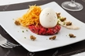
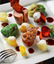
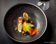

Mardi :
Queue de lotte rôtie
au jambon noir de Bigorre et tapenade,
Ratatouille de légumes du jardin
et tempura de fleurs de courgettes.

Mercredi :
Assiette Armenienne
à l'oeuf et à la viande
et ses accompagnements.

Jeudi :
Suprême de Faisan rôti
et Cuisse en Chou farci
accompagné de son crumble aux grattons
et carottes multicolores.

Vendredi :
Cannelloni inversé au bœuf gascon
et légumes du bord de Save,
basilic et fromage frais.
Samedi :